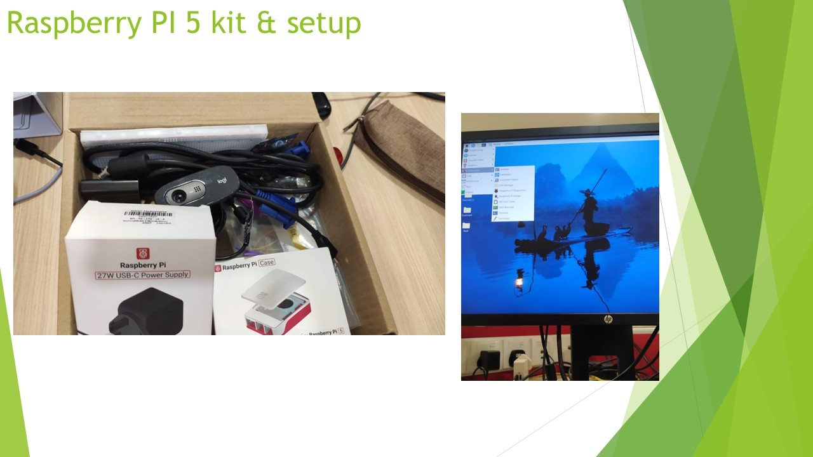
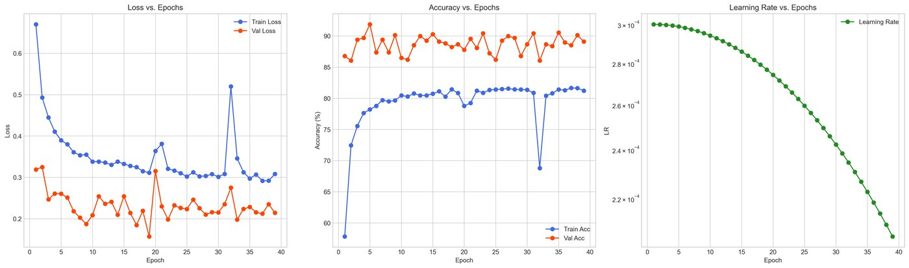

Industrial AI
Machine vision systems for classification, detection, segmentation, and quality control.
Electrical & Electronic Engineering
I am Badr Albdulmajeed, a final-year Electrical and Electronic Engineering student at Asia Pacific University. My work focuses on practical systems where hardware, software, control, power, and AI are connected together and tested as real engineering solutions.
Machine vision systems for classification, detection, segmentation, and quality control.
PLC exposure, embedded boards, sensors, GUI testing, and Industry 4.0 workflow integration.
Power flow analysis, IDMT relay coordination, protection curves, and microgrid simulation.
Experience
This section shows how my internship connected university knowledge with real machine vision, automation, and documentation work.


I developed and deployed machine vision systems for industrial quality control. The work covered fabric classification, PCB component inspection, wood defect segmentation, golf ball classification, GUI testing, hardware interfacing, PLC workflow integration, and technical documentation.
Skills
OpenCV, Roboflow, YOLOv8, Vision Transformer, PyTorch, ONNX Runtime GPU, classification, detection, segmentation, annotation, and augmentation.
Raspberry Pi 5, NVIDIA Jetson Orin Nano, ESP32, Arduino, sensors, ZED 2i stereo camera, RGB-D sensing, LiDAR integration, and RFID access control.
Siemens S7-300, S7-200, S7-1200, TIA Portal SCL, PLC-controlled workflows, pneumatic circuits, and Industry 4.0 machine integration.
Power flow analysis, overcurrent relay coordination, IDMT relay settings, IEC/IEEE inverse curves, TCC plotting, fault analysis, CTs, and circuit breaker logic.
MATLAB, Simulink, MATLAB App Designer, LabVIEW, PowerWorld Simulator, SolidWorks, Dialux, LTspice, and Tinkercad.
Python, C, C++, C#, PyQt5, Streamlit, MATLAB GUI/App Designer, basic web tools, and IoT dashboard work.
E-Portfolio SWOT
This SWOT analysis is included for my E-Portfolio and is based on my CV, project experience, internship work, and PO attainment reflection.
I have strong practical project experience in computer vision, AI, embedded systems, PLC automation, power systems, relay protection, and GUI development. My internship also improved my ability to test, troubleshoot, document, and explain engineering systems clearly.
My problem analysis can still be improved by breaking down complex engineering problems more clearly and comparing possible methods before selecting a solution. I also need stronger reflection on teamwork roles, ethics, and professional responsibility.
Final-year projects, AI and machine vision certification, power system protection learning, PLC exposure, NAFEM or simulation learning, and portfolio development can help me improve my professional engineering profile.
AI, automation, embedded systems, and power technologies change quickly, so falling behind can reduce career opportunities. Time management is also important because project work, university study, and skill improvement can happen at the same time.
Projects

Engineered an automated station using Raspberry Pi 5, sensor triggering, camera input, and a Vision Transformer model for real-time classification.

Created machine vision applications for fabric classification and object detection, deployed across PC and Raspberry Pi platforms.

Built an instance segmentation application to outline scratches and holes on wood surfaces and support quality scoring.

Trained and evaluated machine vision models using dataset preparation, augmentation, performance metrics, and deployment planning.
Developed a MATLAB App Designer tool for IDMT relay coordination, operating time calculation, TCC curves, system analysis, and validation reports.
Built and analysed a 10-bus system using Newton-Raphson, Gauss-Seidel, and Fast Decoupled methods, then studied voltage, flow, and loss effects.
Developed a PLC and pneumatic circuit control system for bus doors, applying automation logic to a practical control task.
Developed the vision subsystem using Jetson Orin Nano, ZED 2i camera, YOLOv8, Roboflow datasets, OpenCV, PyTorch, ONNX Runtime GPU, and PyQt5.
Education
Bachelor of Electrical and Electronic Engineering with Honours
2020 - Expected Graduation 2026American High School Diploma
2017 - 2019Contact
The form prepares an email using your own mail app, and the WhatsApp button opens a direct chat. This keeps the site static while still making contact functional.